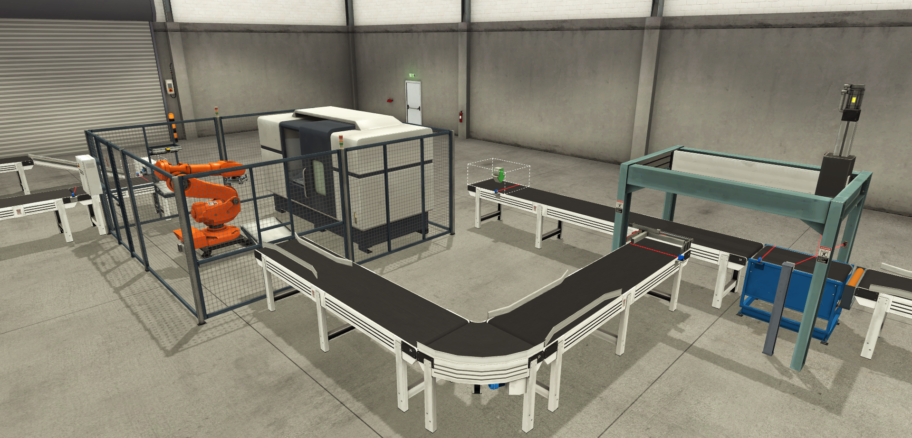
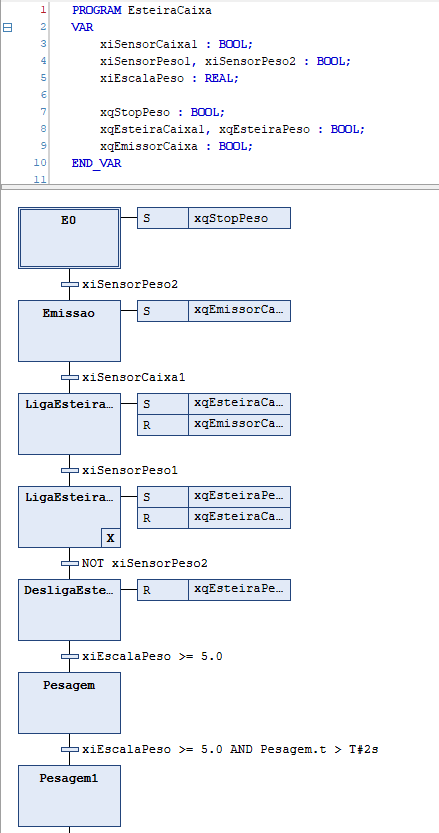

AUTOMAÇÃO INDUSTRIAL
Simulação de separação, usinagem, transporte e armazenamento de peças
Linha de produção simulada no Factory I/O e controlada por um CLP programado no CODESYS. O sistema produz peças, separa a cor desejada, usina, encaixota, eleva e paletiza, tudo de forma totalmente automática. Projeto desenvolvido em dupla com Henrique Xavier Vincentini.
Visão geral
O sistema produz peças cruas de diferentes cores e separa as da cor desejada. Essas peças seguem para um CNC e depois para um pick & place suspenso, que encaixota cinco peças por vez. As caixas são levadas por um elevador e, em seguida, paletizadas.
Todo o processo é automático e dispensa o operador. A única intervenção prevista é a troca da cor das peças a serem produzidas.
O cenário reúne os seguintes equipamentos:
- Pistões e posicionadores;
- Esteiras;
- CNC com braço robótico;
- Braço pick & place suspenso;
- Elevador industrial;
- Paletizadora.
Objetivos e metodologia
O objetivo foi simular, de forma completamente automática, as operações de um ambiente industrial real, integrando diferentes máquinas em uma única sequência coordenada.
Como foi desenvolvido
O trabalho foi feito em dupla, seguindo estas etapas:
- Levantamento da ideia e definição do processo;
- Montagem do cenário no Factory I/O;
- Definição de todas as entradas e saídas necessárias;
- Esboço de diagramas de funcionamento (máquinas de estados);
- Programação em SFC com blocos de Structured Text, em CODESYS;
- Integração de todas as partes em um programa principal;
- Testes do processo completo e correção das falhas encontradas.
Ao todo, o processo trabalha com cerca de 80 variáveis no Factory I/O, entre sensores, atuadores e variáveis auxiliares, dos tipos booleano, inteiro e ponto flutuante.
Demonstração em vídeo
Demonstração do sistema em funcionamento no Factory I/O, com as etapas do processo executadas de forma sequencial e automática, da produção das peças à paletização.
Cenário e programação





O código-fonte do projeto não está disponível para download. Esta página reúne a demonstração em vídeo e as imagens do cenário e da programação.
Resultados
A simulação funcionou como planejado. O sistema executa todas as etapas em sequência, da produção à paletização, e também lida de forma robusta com imprevistos durante a operação.
Limitações e melhorias futuras
Apesar do resultado positivo, a simulação roda de forma lenta e não representa uma produção em larga escala. Como continuação, pretendo aumentar a quantidade de peças produzidas na simulação e integrar um sistema SCADA ao processo.